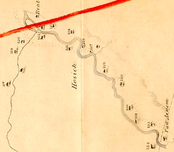

Spelled variously, Hoosick was a rural location in the eastern part of old Albany County and among the favored destination for overflow Albany people. This essay defines the Hoosic Valley locale as east of Schaghticoke and north of Rensselaerswyck. It later became a town and village in what became Rensselaer County in 1791. This exposition focuses on former city residents and on Hoosick's tangential role in the early Albany story.
 Settlement followed the granting of the Hoosick Patent in 1688. The original patentees were: Maria Van Rensselaer of Albany, Hendrick Van Ness of Albany, Gerrit Teunis Van Vechten of Kaatskill, and Jacobus Van Courtlandt of New York.
Two subsequent patents ultimately filled out its borders.
One-time Albany brickmaker Abraham Vosburgh is said to have relocated to the Hoosick Patent in 1738. He is said to have been paying rent in the valley in 1760. In 1741, Johannes Van Vechten transferred all his lands at "Hoosic" to his three sons-in-law.
The burning of Hoosick by Canada-based raiders in August 1754 signaled the New York-based resumption of the imperial struggle between Britain and France. During that conflict, many Hoosick Valley settlers fell back on Albany as refugees. We look to document this migration feature and assess its impact on the city more closely. After the war, some settlers returned to start over on their Hoosick Valley land.
A number of future loyalists including discharged British soldier John Munro relocated from Albany during the mid-1770s. In 1777, the so-called Battle of Bennington took place within the district borders.
After the war, a number of families relocated from Albany including Thomas Lottridge, .
A district in 1772, Hoosick was erected as a town in 1788. It was a separate demographic entity on the census of 1790 when 3,035 residents were counted including 27 slaves and 18 free people of color.
Internet-based resources: Wikipedia; GenWEB; Weise on Hoosick; Town of Hoosick website; Hoosick Township Historical Society; George B. Anderson Hoosick
Follow this link to more about Hoosick on this website. For Hoosic
Detail from the Bleecker Map dated 1767 showing the part of Hoosick within the northeastern corner of the Manor. The heavy red line represents the northern limits of Rensselaerswyck. At that time, the Patroonship counted eighteen or so settlers there as tenants. The line to the right of the "Van Arnhem" label (bottom right corner) represents a "working" but unresolved border with New England.
online: 1/20/11; last updated 1/31/15